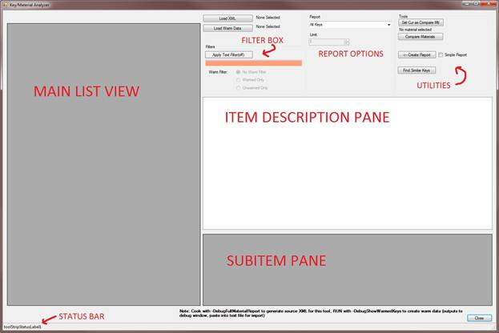
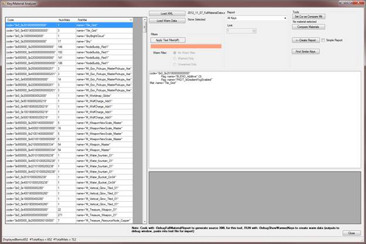
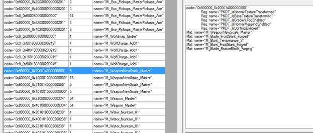
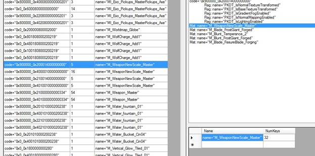
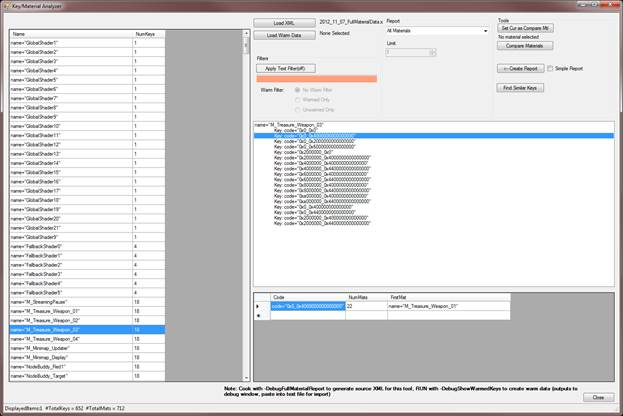
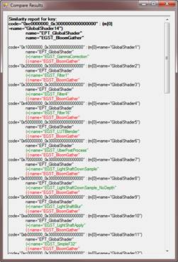
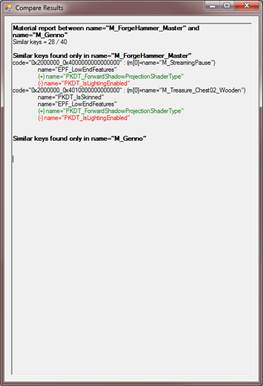

UDN
Search public documentation:
MobileShaderAnalyzer
中国翻译
한국어
Interested in the Unreal Engine?
Visit the Unreal Technology site.
Looking for jobs and company info?
Check out the Epic games site.
Questions about support via UDN?
Contact the UDN Staff
한국어
Interested in the Unreal Engine?
Visit the Unreal Technology site.
Looking for jobs and company info?
Check out the Epic games site.
Questions about support via UDN?
Contact the UDN Staff
Mobile Shader Analyzer
Document Summary: Describes the Mobile Shader Analyzer tool, used to assess the creation of shader keys for mobile development and help inform how to reduce them. Document Changelog: Initial revision.Overview
The Mobile Shader Analyzer (MSA) is a tool used to examine the mobile shaders and materials cooked for an application. Through various methods of reporting the tool can help to reduce the number of created keys, which can help improve application load time performance (the compilation and warming of shader keys can contribute greatly to iOS load times).Preparing Data
Main Data
To create the test data for this application, you must cook your maps in the UFE tool using the command line switch “-DebugFullMaterialReport”. Note that you MUST do a complete rebuild for this to work correctly (“-full”, or delete the contents of your Cookedxxx folder). An incremental cook will load cached shader keys, resulting in incorrect data and empty material strings for all cached keys. Generally you will want to cook all your game content at this time, or materials/shaders may be missed. Once you have cooked your game content, you should see the file FullMaterialData.xml in yourWarming Data
On some occasions you may also be interested in what shaders were warmed during execution of various parts of your application. To obtain this data, run the application on device with the “-DebugShowWarmedKeys” command line option to the application. The application will output key warming information to the debug output stream within the debugger, or Unreal Console if you are running a debug executable. You need to save the debug output of the application as a text file (you can grab all the output, not just the warming information) and save it as a text file to your host PC. NOTE: Due to the implementation of this feature, it is currently only available to code licensees that can produce a debug executable to test with.Launching the Tool
Run MobileShaderAnalyzer.exe located in your UE3/UDK Binaries folder. Upon launch you should see the application as seen below (Figure 1)- Figure 1 - Main Application:

Application Areas
Main List View
This area lists all items (shader keys or materials) based upon the current Report Options and FilterItem Description Pane
Displays detailed information about the current single selection from the Main List ViewSubitem Pane
Displays some additional information about the current selection in the Item Description PaneStatus Bar
Displays information such as the number of items currently listed in the Main List ViewFilter Box
Allows filter terms to be input and applied to the data in the Main List ViewReport Options
Controls what set of data is displayed in the Main List ViewUtilities
Various utilities used to examine, compare or export resultsGeneral Usage
Loading your data
Click the ‘Load XML’ button and browse to your generated XML data file. This will load all key/material data into the application, and will show the default view (All Keys) as seen below (Figure 2)- Figure 2 - Default Application View:

Changing Displayed Data
You can use the dropdown box in the Report Options section of the tool to change what data is displayed in the Main List. The options are:- All Keys – Show all keys generated for the application
- All Materials – Show all materials generated for the application
- Keys from few (use limit) materials – This view will show all keys that are only created from X number of materials, with the default being 1. X can be changed from the Limit box below the main report dropdown. This is one of the more useful views when attempting to reduce shader keys, as described below in the ‘Optimizing Materials’ section.
- Materials creating unique (use limit) keys – Similar to the above option, this will display all the materials that create keys that only come from X materials. Again you can change X with the Limit box. See the ‘Optimizing Materials’ section for more detail on this view
Filtering
You can also filter all result in the Main List View regardless of the Report mode. Filtering is purely text based, using the materials name strings as well as the Code Flag names within the keys. The filter box can accept multiple arguments in a comma separated list. You can use an ‘inverse’ filter (filter thing not containing the search term) using a “!” prefix before your term. All searching is case-insensitive. For example, to filter the view only on items created for low end shaders, but without additive blending, you could type:lowend,!BLEND_additive
Regardless of the filter text present, the filtering can be toggled on and off with the ‘Apply Text Filter’ button. The button text will reflect the current state (on/off) of filtering, as will the color behind the search text (green=actively filtering, orange=filtering off)
If you have generated warming data (see Warming Data), you can also filter using that data. Select the ‘Load Warm Data’ button and browse to your output text file generated from the device. When displaying keys in the Main List View, all keys that were warmed will be highlighted in green. You can completely filter these in or out with the Warm Filter radio buttons in the Filter area.
Examining Data
A Brief Aside – Shader Keys
In the mobile pipeline all shaders are assembled using a combination of parts based upon the settings from the material. A single material will generally create many shader keys, as many of the settings are iterated by the engine based upon both general rules and user-selected settings from the material. For instance, if a material is marked to be used with skinned vertices, the engine doesn’t know if the material will also be applied to an unskinned mesh, so 2 versions of the shader will be created. Versions of the shader will be created for both the normal rendering pass as well as the shadow pass. With enough of these iterated settings stacked on top of each other, the number of permutations grows. This can lead to a single material generating dozens of shaders. All of the unique settings per shader are assigned a single bit in the final signature for the shader, referred to in this tool as the Code String for the shader (this value is the actual unique shader key for each shader). If a shader key is the exact same as an already created key, the shader is not unique and will only be created once. See MobileMaterialReference for more information on Shader Keys and Mobile Materials.Key View
If you are using a Report mode that lists shader keys in the Main List View, you will see the list of keys displayed in 3 main columns: Code String, Number of Materials (NumMats) and the first material in the list of materials that co-generated this key (FirstMat). All of these columns may be clicked upon in the tool to sort by. Often knowing the code string for the first material is not that helpful. To see more detailed information on any key, select it in the Main List View to populate the Item Description Pane with a better breakdown of the selected key (see Figure 3)- Figure 3 - Detailed Information in the Item Description Pane:

- Figure 4 - Showing Additional Material Info in the SubItem? Display:

Material View
If you are using a Report mode that lists materials in the Main List View, you will see a list of all the materials in 2 columns: Name and number of keys generated by the material (NumKeys), as seen in Figure 5. As with key view all columns are sortable. Selecting a material from the Main List View will populate the Item Description Pane with detailed information on the material, namely the list of all shader keys that the material created. Selecting any of these keys in the Item Description Pane will populate the Subitem Pane with additional information on the key: the number of materials that create this key, and the first listed material to do so.- Figure 5 - Displaying Materials:

Utilities
There are several utility functions available to help during your analysis:Create Report
Clicking this button will prompt you to create and save a new text file on your system. The text file will be populated with the current contents of the Main List View, including any filtering. Depending on your Report mode this will be a list of keys and key data or materials. If you select the ‘Simple Report’ checkbox, any material reports will only contain the names of the displayed materials, making the final text file easy to parse if you are passing a list of materials to look at to another person.Find Similar Keys
If the Main List View is displaying keys, selecting one of them and clicking the ‘Find Similar Keys’ button will search through all loaded keys to find keys ‘close’ to the selected. ‘Close’ is defined as being only 1 setting away additive, subtractive or both (so by turning on one feature bit, off another bit, or both). A report window will pop up displaying all found keys that fit this criterion (see Figure 6). Within this view you will see the list of similar keys, and what would need to change in each of them to make them match, with features that would need to be removed marked in red, features to be added marked in green.- Figure 6 - Find Similar Keys Report:

Material Comparison
Sometimes you will want to compare two materials to see if they are the same. For example if you have 2 materials that both generate 40 keys, you may want to know if they are the exact same 40 keys or differ in some fashion. To check, select your first material in the Main List View (must be in a Report mode that displays materials) and click the ‘Set Cur as Compare Mtl’ button. Then select your second material and click ‘Compare Materials’. You will see a popup similar to Figure 7. This box will display how many keys are ‘similar’ between the two materials, and show detail on what makes them similar (using a similar definition of closeness as in the Find Similar Keys report above).- Figure 7 - Material Compare Results:

Optimizing Shader Counts
This section will detail some of the common workflows using this tool to help reduce overall shader usage in your title, as well as general content creation tips to consider during development of your application. Reducing your shader counts will help your application load faster. Having a reduced number of shaders also helps to ensure that your compiled shaders will fit into your application’s shader cache (iOS), enabling faster second-boot times until your application is fully evicted from memory.The Fastest, Smallest Shader: The One that Doesn’t Exist
One of the most important things to try from the outset of you application is to use Master Materials and Material Instance Constants as much as possible. There is very little key iteration possible when using child materials derived from a master material, so your materials will tend to create a large number of keys, but all will map to the same generated set of keys.Tradeoffs: Performance vs. Load Time
Another content creation tip involves a tradeoff between performance and shader counts (which is often a consideration using Master Materials as well). If you have 2 shader keys that are very close in nature, you can enable the missing feature on the ‘smaller’ of the two keys, and pass a default texture/value for that setting when possible. For example if one key uses a mesh color value and another is similar other than that one key, you can enable mesh color value on the first material, and just pass in white/white texture/etc. This will add varying complexity/bandwidth concerns to your shaders, so care must be taken to ensure you can afford the performance hit. This key merging can be slow to do asset by asset, so again using Master Materials is essentially doing the same thing on a larger scale and is preferred.Find Unique Keys
One of the first things to check for in your title is ‘unique’ keys, which is to say keys that come from very few materials. This means that there is some feature or set of features in that material that no other materials in the application use. If this uniqueness can be eliminated, or merged with other keys as mentioned above, then key totals can be reduced. To check for this, use the ‘Keys from few (use limit) Materials’ Report mode, and set the limit accordingly (1 is a good start). Usually from the Item Description View on each key it will become apparent what makes that key/material so unique. The ‘Find Similar Keys’ tool can help here as well. You can also use the ‘Materials creating unique (use limit) keys’ Report mode to list the offending materials here, then export the material list for others to go examineCheck for Overly Iterated Keys
Select the ‘All Materials’ Report mode, then sort by the number of keys per material in descending order. Often materials creating a large number of keys are using Master Materials, which is generally a good thing. You can ensure this by using the Compare Material functionality to compare two materials with the same number of keys generated and see if they are identical. Other times however, materials creating a large number of keys points to a problem of having too many iterated bits selected, often either accidentally, or without anyone knowing they were creating so many keys. If a material creating a large number of keys is not using a Master Material, or is not sharing those keys with other materials, you want to know why. Switch back to ‘All Keys’ Report mode, then filter off the name of the material in question. This will display all keys created by that material. By selecting each key you can either visually check what makes the key unique, or use Find Similar Materials to see how the keys differ from its siblings. Often this will reveal that many iterated settings in the material are forcing a combinatory explosion of keys, which can often be eliminated. Some common examples:- Skinning. If you see both skinned and non-skinned iterations of shaders that you know will ALWAYS be used on skinned meshes, you can add the material to your application’s DefaultEngine.ini, under the MobileMaterialCookSettings section. Add a ‘+SkinningOnlyMaterials=
’ line under this section. During cook only the skinned version of this shader will be created, instantly halving the number of keys created by this material. Example:
[MobileMaterialCookSettings] +SkinningOnlyMaterials=M_FireChest +SkinningOnlyMaterials=M_IceChest
- Fog. The engine will generate unfogged and fogged versions of shaders, switching between the two automatically for performance reasons. If your application does not make use of fogging, you can disable this shader iteration by setting bMobileMinimizeFogShaders=true under the [SystemSettings] section in your application’s DefaultSystemSettings.ini
- Particle settings. There are many particle settings that force iteration of an on/off state within the shaders. If you see toggling of any key settings that you aren’t making use of, disable that feature in the material.